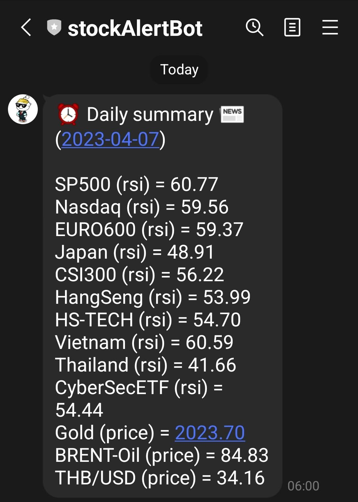

<!--- Jumbotron -->
<div class="container">
    
    <div class="row jumbotron text-center d-flex align-items-center">
        <div class="col-12">
            <!-- message -->
            <p class="lead">
                ติดตามตัวชี้วัดสำคัญของดัชนี และหุ้น ที่คุณสนใจ. <br>
                โดยคุณจะได้รับ รายงานสรุปข้อมูล ประจำวันทุกเช้า ผ่าน Line Account ตามภาพตัวอย่างด้านล่าง
                <br>
                <br>
                ให้คุณเลือกรับ สรุปข้อมูลสำคัญ สูงสุด 20 รายการ ต่อ วัน <br>
                (1 รายการ = 1 ticker และ 1 indicator)
                <br>
                <br>
                สามารถแจ้ง ticker ที่ท่านต้องการติดตามข้อมูลได้ <br>
                ปล. เราดึงราคาจาก <a href="https://finance.yahoo.com/">Yahoo Finance</a>.
                <br>
                <br>
                indicators ที่มีในปัจจุบัน คือ (1) ราคา (2) RSI <br>
                และจะเพิ่มตัวเลือกให้ตามความต้องการของผู้ใช้
                <br>
                <br>
                อยู่ในช่วงทดลอง เปิดรับผู้สนใจเพื่อรับรายงานประจำวันฟรี (จำนวนจำกัด)<br>
                เชิญส่งข้อความมาได้ที่ <a href="{{ site.social.facebook }}">Facebook Page</a> ครับ. 
                <br>
                <br>
                <small class="font-italic">-ขอให้มีความสุขกับการลงทุนครับ <i class="far fa-smile-wink"></i></small>
                <br>
                <br>
                
            </p>
            <!-- fix icon -->
            <!-- <p class="my-4 py-2">
                <i class="fas fa-tools fa-7x"></i>
            </p> -->
            <!-- back to home -->
            <p class="text-center mt-4">
                <a href="{{ site.baseurl }}/" class="btn btn-secondary btn-lg">BACK TO HOME</a>
            </p>
        </div>
    </div>

</div>